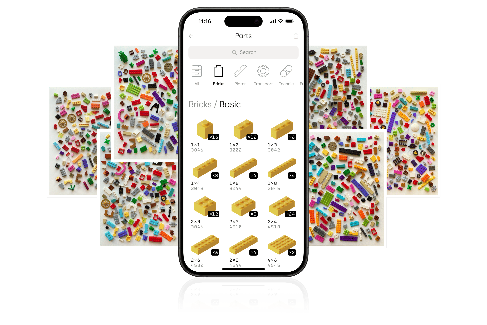

我用 Brickit 把每月积木清点从三天缩到半小时——一条扫描到复刻的完整链
以前拆完旧套装手动数零件要熬两个晚上，现在掏出 Brickit 拍几张照就能自动建库存、搜创意、导 Rebrickable。这条链到底怎么接，哪里最容易断，讲清楚。
每月一次的积木清点，以前是体力活
我手里大概有两万多块乐高积木，散落在五个整理箱里——来自六七年陆陆续续买的套装，大部分已经被我拆掉混在一起了。每月末我会花一个周末做一次清点：把混装的零件按颜色和形状分堆，数每堆有多少块，然后把数据敲进一张 Excel 表。
这套流程我坚持了两年，痛点攒了一箩筐：
- 数错是常态——一堆红色 2x4 砖混着 2x2 和 1x1，眼睛看花了经常数两遍还对不上
- 查库存靠肉眼翻表——想复刻某套 2018 年绝版的星战 set，我得拿着零件清单对着 Excel 一行一行找有没有对应编号的零件，一次下来半小时起步
- 新拆的套装不想入库——清点 500 块零件的套装，手动登记要两个小时，有时候干脆放弃，让新拆的零件继续躺在纸箱里
去年朋友给我推荐Brickit官网的时候，我以为就是个拍照识别的玩具 APP。真正把它插进我的清点流程之后，才发现它能串起一整条链——从扫描建库存，到搜零件、找创意，再到导出 Rebrickable 存档，中间的手动环节砍到了几乎为零。
这条链长什么样
先说整体架构，每个环节具体怎么接放在后面：
拆套装 → 每袋拍一张 Brickit 扫描照 → AI 自动识别建 Pocket
↓
所有 Pocket 合并成完整数字库存
↓
想复刻 set？在 Brickit 里搜创意 → 自动对比库存告诉你缺啥
↓
清点完导出 Rebrickable → 存档或直接在 Rebrickable 上补货整条链里我唯一需要手动做的事，就是把零件分成小袋（一袋不超过 30~50 块，识别率最高）和偶尔修正几个 AI 认错的零件。剩下的全是 Brickit 的活。
环节一：扫描建 Pocket
这是整条链的起点。以前我是"按颜色分堆"然后数，现在改成"按袋装分堆"然后拍。
我用的是那种透明自封袋，每袋标个编号（Pocket #1、Pocket #2……），然后把 30~50 块零件倒在一张白纸上拍一张。光线要均匀——我试过在台灯下拍，阴影重的地方识别率会掉一截，后来改成在窗边自然光下拍，识别率稳定在 95% 以上。
拍完 Brickit 会自动框出照片里的每一块零件，标上识别到的编号和颜色。偶尔有磨损严重的老零件会认错颜色（白色被识成灰色是高频问题），这时候手动点一下改过来就行——一袋里通常也就一两块需要改。
扫完所有袋子，Pockets 界面里就是一份完整的数字库存了：每个 Pocket 有哪些零件、每种零件有几块、分布在第几袋，一目了然。
环节二：搜索和创意匹配——这才是 Brickit 真正值钱的地方
建完库存之后，痛点就从"我不知道有什么"变成了"我想用这些零件搭点什么"。
以前想复刻某套 set，我得先去 Rebrickable 下载零件清单，然后拿着清单对着我的 Excel 表逐行核对。现在这个环节直接变成：在 Brickit 里搜那套 set 的编号或名字，它会自动把我的完整库存和创意需要的零件清单做对比，几秒钟就告诉我"这套需要 247 块零件，你有 244 块，缺 3 块"，还能精确到缺的是什么——比如"红色 2x6 × 2，黑色 1x1 × 1"。
知道缺什么之后，要么去 Rebrickable 上买那 3 块，要么换一个能搭的创意——Brickit 的创意库里有几千个推荐，Pro 版可以打开"只显示完整可搭"筛选，直接把你手头零件全有的创意排在前面。这个筛选开关在免费版是锁的，对零件种类多但数量分散的玩家来说是刚需。
环节三：导出 Rebrickable 存档
清点完之后我会把库存导出一份 Rebrickable 格式的 CSV，上传到 Rebrickable 账户存档。这样有两个好处：一是 Rebrickable 上能查到完整的"你能用手头零件复刻哪些套装"；二是如果哪天 Brickit 数据丢了，Rebrickable 那边还有一份完整备份。
免费版的导出有一些字段限制，但我用 Pro 版导出是完整字段、直接兼容 Rebrickable 导入格式的，不用手动改列名。

两个容易断链的环节
这条链跑了半年，我总结出两个最容易出问题的地方，提前处理好能省很多事。
断链一：扫完不手动调数量
从某个 Pocket 里拿走零件搭完东西之后，必须回到 Pockets 界面把那块零件的数量减去——这个动作 2 秒就能做完，但很多人容易忘。库存不准的话，后续的创意匹配就是错的——Brickit 以为你有 12 块红色 2x4，实际你只剩 5 块，推荐的创意就搭不出来。
我给自己定了个规矩：每次拆完东西搭完新创意，第一件事就是开 Brickit 减库存。现在已经养成习惯了，不会忘。
断链二：扫描时光线太暗或零件堆太紧
我试过在晚上台灯下拍，也试过把零件密密麻麻堆成一团拍，这两种情况的识别率会掉到 80% 以下，很多小零件（1x1 的圆板、细杆）会漏识别。后来固定成一个操作规范：白天窗边自然光 + 零件倒在白纸上散开、互不遮挡，识别率就稳定了。Brickit 的设置里还有一个"识别精度优先"的模式，不嫌慢的话去Brickit文档翻一下具体参数怎么调，磨损零件和小零件的识别率还能再提几个百分点。App 本身从官方下载就能拿到，iOS Android 都有。
效果和边界
说点具体数字，别讲"大大提升效率"这种空话：
- 清点一套 500 块的旧套装：以前手动数 2 小时，现在分 10 袋各拍一张 + 偶尔修正两三个识别错误，实际耗时 10 分钟左右
- 查某套绝版 set 能不能复刻：以前翻 Excel 半小时，现在 Brickit 搜一下创意 5 秒出结果
- 维护成本：每月一次的清点，以前是一个周末的事，现在是一个晚上就能搞定
但这条链也有明显的边界，别指望它解决所有问题：
- 纯套装党用不上——如果你买乐高就是按说明书拼好摆着、从来不拆，那 Brickit 的扫描功能对你来说是多余的
- 磨损严重的老零件识别率会降——有些玩了十几年的零件颜色褪得厉害，AI 有时候会认错，需要手动改
- 免费版有限制——大库存的批量编辑、完整创意库筛选、Rebrickable 完整导出这些都锁在 Pro 后面。免费版扫几十袋、管理一千多块零件是够用的，但上万块的收藏还是建议 Pro
- 只有手机端——目前只有 iOS 和 Android 客户端，没有电脑版。对我来说不是问题，我习惯拿着手机蹲在整理箱旁边拍，但如果你只在电脑上操作就尴尬了
我给它的定位
Brickit 在我的工具链里不是主力工具，而是一个"把散落的数据结构化"的连接点——它把我散落在五个整理箱里的两万块零件，变成了一份可搜索、可对比、可导出的结构化数据。有了这份数据，后面的事（找创意、补货、存档）才能真正高效起来。
如果你也有一堆记不清有什么的乐高，我建议先装个免费版扫一两袋试试——不用花一分钱就能体验到核心价值，觉得好用再考虑 Pro。毕竟，把"翻遍三个鞋盒找一块红色 2x4"的时间省下来，多搭两套创意不香吗。对了，GitHub、Gitee、GitCode 上也有 Brickit 的完整资料，哪个顺手用哪个。